mobix
Documentation and HELPLast Updated: 12 September 2015
Current Version: 2.1
Thank you for purchasing our item. If you have any questions that are beyond the scope of this help file, please feel free to email via our profile page
Contact Us1 Introduction
Mobix is an unique mobile template that will help you create a mobile website, a mobile web app, or a native app (integrated with solutions like phonegap). The mobile template is using a flexible layout that will adapt any mobile resolution. Includes multiple pages and design elements that will help in creating any section of your website or app. The template uses Ajax and jQuery to load the pages dinamically, this will give a real app feel when navigating.
1.A Package files content. - top ^
The package you downloaded from themeforest include the following structure:
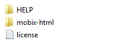
The main HTML files of the template are found inside the mobix-html folder. The HELP folder includes the documentation.
Inside the mobix-html folder you will see the following structure:
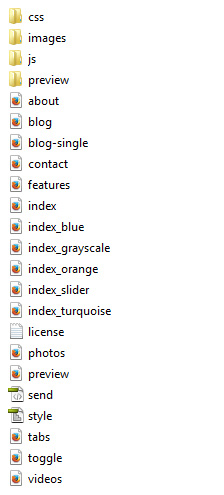
The main file of the template is index.html. This will be the default home page of the mobile website.
The preview.html and preview folder are only used for preview. When using the template on your server you can delete those 2.
1.B HTML/CSS templates, definition and usage. - top ^
A HTML/CSS Template is a pre-designed layout that will help you build a final website. HTML ( HyperText Markup Language) is the basic coding to create web pages. CSS stands for Cascading Style Sheets and it's used to define and style the HTML elements.
To install a HTML/CSS template requires just to copy the template files on your webserver. This can be done using your hosting provider custom interface or a FTP (File Transfer Protocol) software. Our recommandation is FileZilla.
A regular HTML/CSS template does NOT include a CMS (Content Management System) to edit/add content of the pages. All content is edited using a HTML editor. HTML editors can be found as free and paid editors. Some modern HTML editors have included a DESIGN view mode of the code, making it easier for templates to be edited. Regular ones will let you edit the content only from the code mode, meaning you will need to have a basic HTML coding knowledge.
2 Different usage of this mobile template - top ^
This mobile template can be used to create a mobile website, a web app, and a native app. Depending on your needs you can use this layout to create the desired final product. Below we will try to describe each one of the final product you can create.
2.ACreating a mobile website, redirecting from your desktop website to the mobile one. - top ^
You can use this template to create a mobile version of your website. Considering that you main desktop website is not responsive or you want a separate mobile version of it, minio is a perfect solution to do that.
To createa a separate mobile version of your website using this template will require to create a subdomain or a subfolder of your domain (mobile.yourwebsite.com or m.yourwebsite.com) where the main files will be copied.
To redirect users to your new created mobile website you will need to use a redirection code. First you need to add a mobile detection code, and then redirect mobile users to the mobile url.
For more information about mobile detection and redirection check THIS WEBSITE.
2.BCreating a web app, difference between web app and native app. - top ^
You can use this template to create a web app. Web app are simple web application than run from a web server. Web apps are visible through a web browser and function just like a normal website.
Minio offers the feel of a web app because of his Ajax and jQuery effects and navigation.
The difference between web and native apps is that native apps are developed essentially for one particular mobile device and is installed directly onto the device itself. And are available only on app stores. Web apps can be used on any mobile device, and do not need to be downloaded first.
Below you can see how your web app icon will look saved on iPhone home screen. Saving it like this will give an option to open it directly in full screen mode.
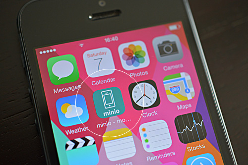
To modify the icon and loading screen images see the code in the header section of index.html file
<meta name="apple-mobile-web-app-capable" content="yes">
<meta name="apple-mobile-web-app-status-bar-style" content="black">
<link rel="apple-touch-icon" href="images/apple-touch-icon.png" />
<link rel="apple-touch-startup-image" media="(device-width: 320px) and (device-height: 568px) and (-webkit-device-pixel-ratio: 2)" href="apple-touch-startup-image-640x1096.png">
Images are located inside images folder.
2.CConverting it into a native app. - top ^
To convert this template into a native app you will need to use solutions like phonegap.
"Easily create apps using the web technologies you know and love: HTML, CSS, and JavaScript .
PhoneGap is a free and open source framework that allows you to create mobile apps using standardized web APIs for the platforms you care about. "
More about phonegap on their WEBSITE
3 Editing this template - top ^
EDITING THIS TEMPLATE REQUIRES BASIC HTML/CSS AND JAVASCRIPT KNOWLEDGE. IF YOU DON'T HAVE A BASIC KNOWLEDGE OF THIS WE RECOMMEND HIRE A WEBDESIGNER OR LOOK FOR A FREELANCER ON ENVATO STUDIO.
EDITING THIS MOBILE TEMPLATE DO NOT REQUIRE A SERVER. YOU CAN EDIT IT USING A LOCAL HTML EDITOR SOFTWARE. ONLY TESTING IT WILL REQUIRE TO BE UPLOADED TO A SERVER. IN ORDER TO LOAD IT WITH YOUR MOBILE.
To edit this HTML template you will need a HTML editor. Even Notepad will do the job, but a dedicated HTML editor will work better in arranging the code structure. HTML editors are softwares that allow code editing. Some HTML editors have included a DESIGN mode, which will allow you to see the interface of the page you are editing. Editor can be found FREE and PREMIUM on the WEB.
TESTING THIS TEMPLATE MAY REQUIRE TO UPLOAD THE FILES TO A WEB SERVER. THE NEW FEATURES OF THIS TEMPLATE ARE MADE ONLY FOR THE LATEST MOBILE PHONES
3.A Home page structure - top ^
The main page of this template is index.html file. This is the home page of your website, the first page the browser will open when users will access your website.
Home page structure starts with LEFT and RIGHT panels. This panels can be accessible by clicking one link or a button. Below you will see how this panels are looking when opened.
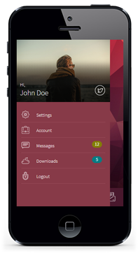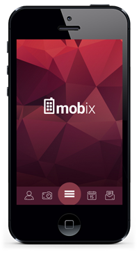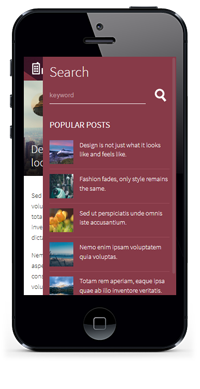
The HTML code of this panels is:
<div class="panel panel-left panel-cover">
<div class="user_login_info">
<div class="user_thumb">
<img src="images/profile.jpg" alt="" title="" />
<div class="user_details">
<p>Hi, <span>John Doe</span></p>
</div>
<div class="user_social">
<a href="#" data-popup=".popup-social" class="open-popup"><img src="images/icons/white/twitter.png" alt="" title="" /></a> </div>
</div><nav class="user-nav">
<ul>
<li><a href="features.html" class="close-panel"><img src="images/icons/white/settings.png" alt="" title="" /><span>Settings</span></a></li>
<li><a href="features.html" class="close-panel"><img src="images/icons/white/briefcase.png" alt="" title="" /><span>Account</span></a></li>
<li><a href="features.html" class="close-panel"><img src="images/icons/white/message.png" alt="" title="" /><span>Messages</span><strong class="green">12</strong></a></li>
<li><a href="features.html" class="close-panel"><img src="images/icons/white/download.png" alt="" title="" /><span>Downloads</span><strong class="blue">5</strong></a></li>
<li><a href="index.html" class="close-panel"><img src="images/icons/white/lock.png" alt="" title="" /><span>Logout</span></a></li>
</ul>
</nav>
</div>
</div>
<div class="panel panel-right panel-cover">
<h2>Search</h2>
<div class="search_form">
<form id="SearchForm" method="post">
<input type="text" name="keyword" value="" class="search_input" placeholder="keyword" />
<input type="image" name="submit" class="search_submit" id="submit" src="images/icons/white/search.png" />
</form>
</div>
<div class="clear"></div>
<h3>POPULAR POSTS</h3>
<ul class="popular_posts">
<li>
<a href="blog-single.html" class="close-panel"><img src="images/photos/photo1.jpg" alt="" title="" /></a>
<span><a href="blog-single.html" class="close-panel">Design is not just what it looks like and feels like.</a></span> </li>
<li>
<a href="blog-single.html" class="close-panel"><img src="images/photos/photo2.jpg" alt="" title="" /></a>
<span><a href="blog-single.html" class="close-panel">Fashion fades, only style remains the same.</a></span> </li>
<li>
<a href="blog-single.html" class="close-panel"><img src="images/photos/photo3.jpg" alt="" title="" /></a>
<span><a href="blog-single.html" class="close-panel">Sed ut perspiciatis unde omnis iste accusantium.</a></span> </li>
<li>
<a href="blog-single.html" class="close-panel"><img src="images/photos/photo4.jpg" alt="" title="" /></a>
<span><a href="blog-single.html" class="close-panel">Nemo enim ipsam voluptatem quia voluptas.</a></span> </li>
<li>
<a href="blog-single.html" class="close-panel"><img src="images/photos/photo5.jpg" alt="" title="" /></a>
<span><a href="blog-single.html" class="close-panel">Totam rem aperiam, eaque ipsa quae ab illo inventore veritatis.</a></span> </li>
</ul>
</div>
To open one of this panels you need to setup your link or button like:
<a href="#" data-panel="left" class="open-panel"></a>
<a href="#" data-panel="right" class="open-panel"></a>
The home page structure continues with the logo
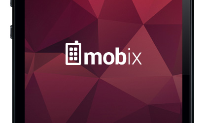
The logo is center horizontally and vertically
<div class="page-content">
<div class="logo"><img src="images/logo.png" alt="" title="" /></div>
</div>
There is one version of this template which includes a slider
The slider is the center section of the main page. Here you can add important titles from your website.
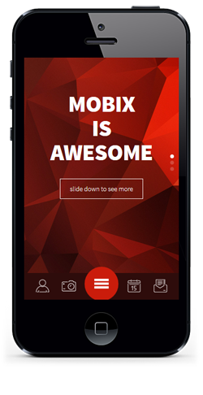
<!-- Slider -->
<div class="swiper-container swiper-init" data-effect="slide" data-direction="vertical" data-pagination=".swiper-pagination">
<div class="swiper-wrapper">
<div class="swiper-slide">
<span>MOBIX <br />IS <br /> AWESOME</span>
<a href="about.html" class="swiper_read_more">slide down to see more</a> </div>
<div class="swiper-slide">
<span>MOBIX <br />IS <br /> CREATIVE</span>
<a href="features.html" class="swiper_read_more">see all features</a> </div>
<div class="swiper-slide">
<span>MOBIX <br />IS <br /> ADAPTABLE</span>
<a href="#" class="swiper_read_more open-popup" data-popup=".popup-menu">start navigating</a> </div>
</div>
<div class="swiper-pagination"></div>
</div>
At the bottom of the home page is the toolbar. Here you can add important links / icons to your main website pages.
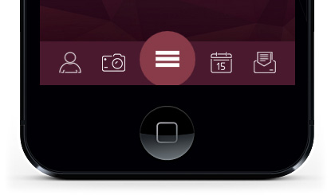
<!-- Bottom Toolbar-->
<div class="toolbar">
<div class="toolbar-inner">
<ul class="toolbar_icons">
<li><a href="#" data-panel="left" class="open-panel"><img src="images/icons/white/user.png" alt="" title="" /></a></li>
<li><a href="photos.html"><img src="images/icons/white/photos.png" alt="" title="" /></a></li>
<li class="menuicon"><a href="#" data-popup=".popup-menu" class="open-popup"><img src="images/icons/white/menu.png" alt="" title="" /></a></li>
<li><a href="blog.html"><img src="images/icons/white/blog.png" alt="" title="" /></a></li>
<li><a href="contact.html"><img src="images/icons/white/contact.png" alt="" title="" /></a></li>
</ul>
</div>
</div>
In the toolbar we have added links to open the main menu, the user account slide and some random pages.
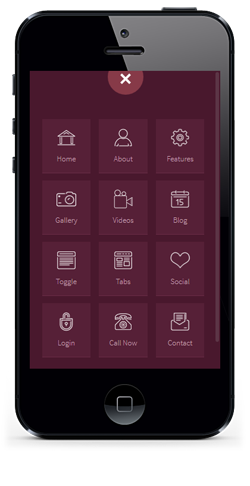
To open a popup you need to setup your link like:
<a href="#" data-popup=".popup-menu" class="open-popup">.....</a>
3.B Secondary pages - top ^
The structure of the secondary pages is different from the home page. In the secondary pages the layout starts with div class="pages". The rest of the header HTML elements are missing. Styles, javascript code is only added on home page.
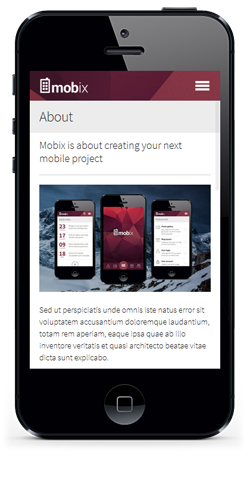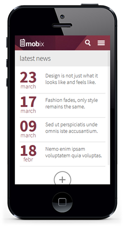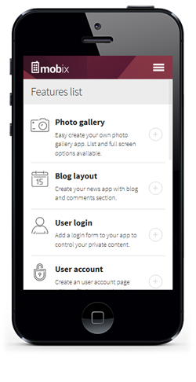
First element on a secondary page is the header.
<div class="navbarpages">
<div class="nav_left_logo"><a href="index.html"><img src="images/logo.png" alt="" title="" /></a></div>
<div class="nav_right_button"><a href="#" data-popup=".popup-menu" class="open-popup"><img src="images/icons/white/menu.png" alt="" title="" /></a></div>
</div>
In the header you can add the small logo image, an icon to open the menu. And on Blog section icons to go back to posts listing and options to open the search right panel.
The structure continues with the center content of any page. Inside the pages maincontent DIV you can add all the page content.
<div id="pages_maincontent"> </div>
2.C Blog section - top ^
The Blog section is a static news page. All posts in this section must be manually added. To create this news section dinamically will require some programming code and a database. There is also a details page included blog-single.html which is the single blog page of one post.
The HTML code of a blog post:
<li>
<div class="post_entry">
<div class="post_date">
<span class="day">23</span>
<span class="month">march</span>
</div>
<div class="post_title">
<h2><a href="blog-single.html">Design is not just what it looks like and feels like.</a></h2>
</div>
</div>
</li>
At the bottom of all posts list is a button which clicked will load more posts.
<div id="loadMore"><img src="images/load_posts.png" alt="" title="" /></div>
To edit the number os posts to show see the javascript file inside the "js" folder, called my-app.js. And the code to edit is x=4; from this function:
$(".posts li").hide();
size_li = $(".posts li").size();
x=4;
$('.posts li:lt('+x+')').show();
$('#loadMore').click(function () {
x= (x+1 <= size_li) ? x+1 : size_li;
$('.posts li:lt('+x+')').show();
if(x == size_li){
$('#loadMore').hide();
$('#showLess').show();
}
});
3.C Photo Gallery - top ^
Using this template you can create a photo gallery web app.
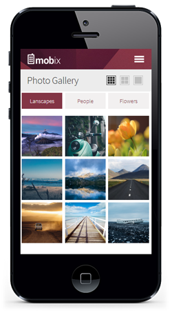
The gallery page starts with the switching icons. Using this icons you can switch the gallery view mode. From 1/3 photos on a row to 1/2 and full width.
<div class="gallery_switch">
<a href="#" id="view13" class="switcher active"><img src="images/switch_13_active.png" alt="Grid"></a>
<a href="#" id="view12" class="switcher"><img src="images/switch_12.png" alt="Grid"></a>
<a href="#" id="view11" class="switcher"><img src="images/switch_11.png" alt="List"></a>
</div>
The photos pages code continues with the filters categories
<div class="photo-categories">
<a href="#tab1p" class="tab-link active category-link">Lanscapes</a>
<a href="#tab2p" class="tab-link category-link">People</a>
<a href="#tab3p" class="tab-link category-link">Flowers</a>
</div>
And each filter/category will select the current photos from a tab system.
<div id="tab1p" class="tab active">
<ul id="photoslist" class="photo_gallery_13">
<li><a rel="gallery-3" href="images/photos/photo1.jpg" title="Photo title" class="swipebox"><img src="images/photos/photo1.jpg" alt="image"/></a></li>
<li><a rel="gallery-3" href="images/photos/photo2.jpg" title="Photo title" class="swipebox"><img src="images/photos/photo2.jpg" alt="image"/></a></li>
<li><a rel="gallery-3" href="images/photos/photo3.jpg" title="Photo title" class="swipebox"><img src="images/photos/photo3.jpg" alt="image"/></a></li>
<li><a rel="gallery-3" href="images/photos/photo4.jpg" title="Photo title" class="swipebox"><img src="images/photos/photo4.jpg" alt="image"/></a></li>
<li><a rel="gallery-3" href="images/photos/photo5.jpg" title="Photo title" class="swipebox"><img src="images/photos/photo5.jpg" alt="image"/></a></li>
<li><a rel="gallery-3" href="images/photos/photo6.jpg" title="Photo title" class="swipebox"><img src="images/photos/photo6.jpg" alt="image"/></a></li>
<li><a rel="gallery-3" href="images/photos/photo7.jpg" title="Photo title" class="swipebox"><img src="images/photos/photo7.jpg" alt="image"/></a></li>
<li><a rel="gallery-3" href="images/photos/photo8.jpg" title="Photo title" class="swipebox"><img src="images/photos/photo8.jpg" alt="image"/></a></li>
<li><a rel="gallery-3" href="images/photos/photo9.jpg" title="Photo title" class="swipebox"><img src="images/photos/photo9.jpg" alt="image"/></a></li>
<div class="clearleft"></div>
</ul>
</div>
To add a new photo just add a new line of
<li><a rel="gallery-3" href="images/photos/photo9.jpg" title="Photo title" class="swipebox"><img src="images/photos/photo9.jpg" alt="image"/></a></li>
3.D Contact page - top ^
The template includes a functional contact form.
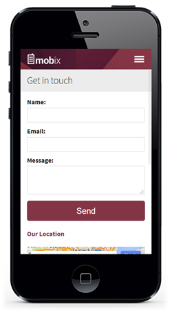
The HTML code of the form is:
<div class="contactform">
<form class="cmxform" id="ContactForm" method="post" action="">
<label>Name:</label>
<input type="text" name="ContactName" id="ContactName" value="" class="form_input required" />
<label>Email:</label>
<input type="text" name="ContactEmail" id="ContactEmail" value="" class="form_input required email" />
<label>Message:</label>
<textarea name="ContactComment" id="ContactComment" class="form_textarea textarea required" rows="" cols=""></textarea>
<input type="submit" name="submit" class="form_submit" id="submit" value="Send" />
<input class="" type="hidden" name="to" value="youremail@yourwebsite.com" />
<input class="" type="hidden" name="subject" value="Contacf form message" />
<label id="loader" style="display:none;"><img src="images/loader.gif" alt="Loading..." id="LoadingGraphic" /></label>
</form>
</div>
To edit the email you want to receive the messages just edit the line:
<input class="" type="hidden" name="to" value="youremail@yourwebsite.com" />
4 CSS Files - top ^
The template is using for each design 2 main CSS file and 3 secondary ones.
1. The general css file is style.css loaded in each index file
<link type="text/css" rel="stylesheet" href="css/style.css"/>
At the top of the style.css file there is a "Table of Contents" list that will guide through the CSS code.
1. RESET
2. GENERAL
3. CUSTOM BUTTONS
4. LEFT AND RIGHT SLIDE PANELS
4-1. LEFT SLIDE PANEL
4-2. RIGHT SLIDE PANEL
5. MAIN NAVIGATION POPUP AND FOOTER TOOLBAR
5-1. MAIN NAVIGATION
5-2. FOOTER TOOLBAR
6. HOME PAGE LAYOUT
6-1. HOME PAGE WITH SLIDER
7. PAGES LAYOUT
7-1. PAGES HEADER
8. FEATURED LISTS
9. POPUPS
10. PHOTO GALLERY
11. BLOG LAYOUT
12. FORMS
12-1. CONTACT FORM
12-2. LOGIN / SIGNUP / FORGOT PASS FORM
12-3. COMMENT FORM
13. TABS & ACCORDION
14. MEDIA QUERIES
- @media screen and (max-width: 480px)
The template uses a custom google web font.
In style.css the font is defined in the body section
body {
font-family: 'Source Sans Pro', sans-serif;
}
And loaded in the header section of the main index.html file
<link href='http://fonts.googleapis.com/css?family=Source+Sans+Pro:400,300,700,900' rel='stylesheet' type='text/css'>
The second main CSS file is the color style. In each index HTML file there si a specifi color style added. Just like the main index.html file have:
<link rel="stylesheet" href="css/colors/magenta.css">
2. The secondary CSS files found inside the CSS folder.
framework7.css file is the script CSS we are using to create the main functionality of the pages. WE RECOMMEND NOT TO EDIT THIS.
reset.css is a general reseting code for browsing.
swipebox.css is the CSS of the photo gallery section.
5 JavaScript Files - top ^
The template includes more javascript files which are loaded at the end of each index file
<script type="text/javascript" src="js/jquery-1.10.1.min.js"></script> <script src="js/jquery.validate.min.js" type="text/javascript"></script> <script type="text/javascript" src="js/framework7.min.js"></script> <script type="text/javascript" src="js/my-app.js"></script> <script type="text/javascript" src="js/jquery.swipebox.js"></script> <script type="text/javascript" src="js/jquery.fitvids.js"></script> <script type="text/javascript" src="js/email.js"></script>
1. <script type="text/javascript" src="js/jquery-1.10.1.min.js"></script>
jQuery general code. Version 1.10.1
2.<script src="js/jquery.validate.min.js" type="text/javascript"></script>
<script type="text/javascript" src="js/email.js"></script>
Validation and sending functions for the contact form
3.<script type="text/javascript" src="js/framework7.min.js"></script>
Main core functions for the pages and layout
4.<script type="text/javascript" src="js/my-app.js"></script>
The custom functions of the template.
All pages custom functions are added here. For example tabs, toogles and the rest of the custom code needed on a secondary page.
5. <script type="text/javascript" src="js/jquery.swipebox.js"></script>
Photo Gallery custom function.
6.<script type="text/javascript" src="js/jquery.fitvids.js"></script>
Functions to make videos responsive.
6 Sources and Credits - top ^
- jQuery - from http://jquery.com/
- Framework7 - http://www.idangero.us/framework7/
- Swipebox - http://brutaldesign.github.io/swipebox/
- Fitvidsjs - http://fitvidsjs.com/
- Free comercial icons - http://puppetscientists.com/#icons
- Demo photos - unsplash.com